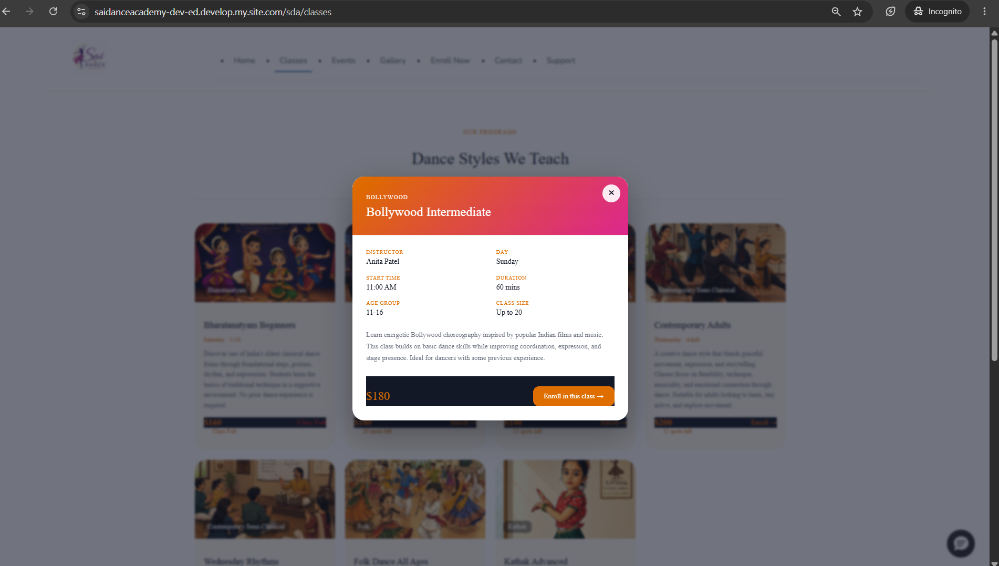
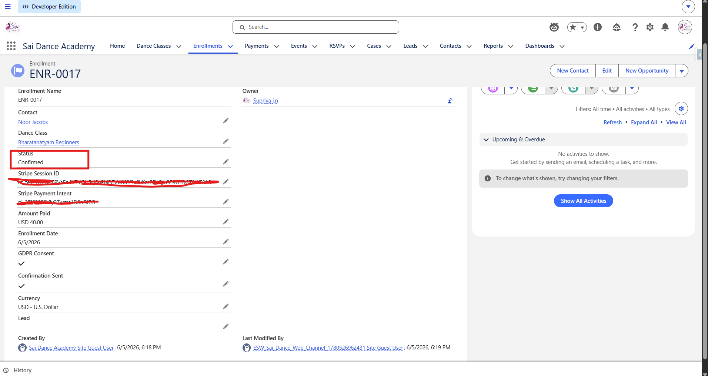

This is the project I'm most proud of in this portfolio — not because it's the most complex thing I've ever built, but because it's the most complete. It's a full digital platform: a public-facing website, a payment pipeline, an AI assistant, a support operation with SLA tracking, and an admin command centre. All on Salesforce. All in one org.
The idea came from real professional experience. I've worked on Experience Cloud implementations, Stripe-style payment integrations, and external system connectors in production environments. I wanted to build something that demonstrated those same patterns properly — end to end, with the full architecture visible — since the original client work lives behind NDAs. So I built Sai Dance Academy: a fictional dance academy, a real platform.
Part 1 covers the architecture, data model, and the six core user journeys. Part 2 is where it gets honest — 14 real issues, how each was diagnosed and fixed, and what they taught me about the platform.
The brief
Build a complete digital platform for a dance academy. A public website where prospective students can discover classes, enroll and pay, register for events, get AI-assisted support, and make enquiries — backed by an internal operation for managing the business and serving customers. Do it entirely on Salesforce, demonstrating breadth across the platform.
💡 Why this scope
I deliberately made the brief ambitious. A simple "display some records on an Experience Cloud page" doesn't demonstrate much. The brief needed a payment pipeline, an AI layer, a support operation, and an admin view — because that's what real platform delivery looks like. Each piece forced a different set of platform decisions.

The public-facing Experience Cloud site — no login required
The solution at a glance
A single Salesforce org delivering six capabilities across two surfaces — a public website and an internal admin app:
How it connects
Architecture Overview
The platform has three distinct layers. Understanding how they connect is the foundation for everything else.
Front end — Experience Cloud (LWR)
The public site is built on Salesforce Experience Cloud using the LWR (Lightning Web Runtime) framework with custom Lightning Web Components. The hero, the data-driven class catalogue with detail modals and live availability, the enrollment form, the events page, and the support/contact pages are all custom LWC. A test-data notice banner appears on data-entry pages — it's a demo site, and I wanted that visible and honest.
Backend — Apex controllers
The LWC components talk to @AuraEnabled Apex controllers for the catalogue, enrollment, and Stripe checkout. A public @RestResource webhook handles payment confirmation from Stripe. @InvocableMethod actions power the Agentforce agent's data access.
Automation — Flows
Record-triggered Flows handle confirmation emails for enrollments, RSVPs, and cases. A before-save Flow assigns case priority based on reason. Auto-Response Rules handle case acknowledgment. The automation layer is deliberately declarative where possible — Apex only where the platform requires it.
🏗️ Key architectural principle
The payment pipeline is designed as a single confirmation trigger. When an enrollment or RSVP "becomes Confirmed" — whether instantly (free) or via webhook (paid) — the same downstream automation fires. One trigger, two paths, consistent behaviour.
The foundation
Data Model — Five Custom Objects
Getting the data model right before writing a line of Apex or touching Experience Builder was non-negotiable. The integration is only as good as the structure it writes into.
| Object | Type | Purpose | Key relationships |
|---|---|---|---|
| Dance_Class__c | Custom | The catalogue. Every class is a record — name, instructor, schedule, fee, max capacity, age group, description, active flag. | Parent of Enrollment__c |
| Enrollment__c | Custom | Records a student's enrollment in a class. Status progresses: Pending Payment → Awaiting Payment → Confirmed (or Payment Failed). | Lookup to Dance_Class__c, Contact |
| Payment__c | Custom | Audit trail for every payment. Created by the webhook on success or failure. Stores Stripe payment ID, amount, currency, status, failure reason. | Lookup to Enrollment__c |
| Event__c | Custom | Events — free or paid. Carries a free flag; the payment pipeline branches based on this. Same catalog-driven approach as classes. | Parent of RSVP__c |
| RSVP__c | Custom | Records an attendee's registration for an event. Same status model as Enrollment — free RSVPs confirm instantly, paid RSVPs wait for the webhook. | Lookup to Event__c, Contact |
| Contact | Standard | The student/attendee record. Created or matched by email on enrollment/RSVP. Deduplication is handled in Apex — no duplicate Contact for the same email. | Related to Enrollment__c, RSVP__c, Case |
| Lead | Standard | Captured by Web-to-Lead (contact form) and by the Agentforce agent when someone makes an enquiry. | Source tracked (Web, Agentforce Assistant) |
| Case | Standard | Support requests — via Web-to-Case or Agentforce. Priority assigned automatically. Entitlements and Milestones track SLA. | Entitlement, Contact |
💡 Capacity is computed, not stored
Available spots are calculated live from confirmed enrollments rather than stored as a counter field. This avoids counter drift — a confirmed enrollment at any point produces the correct available count automatically. Defense in depth: enforced in the UI and in Apex so it can't be bypassed.
What it does
The Six Core User Journeys
Six user journeys cover the full platform. Each one was built and tested end to end — including in incognito to exercise true guest permissions, not just the authenticated preview.
A visitor browses the class catalogue, opens a detail modal showing instructor, schedule, age group, capacity, and fee, clicks Enroll, completes the form, and is redirected to Stripe Checkout. On payment, Stripe fires a webhook to a public Apex REST endpoint. The endpoint finds the enrollment by the Stripe session ID stored in metadata, flips the status to Confirmed, creates a Payment audit record, and the confirmation Flow sends an email.
The entire chain — browse → enroll → pay → confirm → email — runs with no human intervention. The enrollment only becomes Confirmed after the webhook fires. Before that it sits at Awaiting Payment.
When confirmed enrollments reach max capacity, the class card shows "Class Full" and the Enroll button disappears — enforced in the LWC by a computed property. If someone attempts to bypass the UI and submit directly, the Apex controller checks capacity server-side and refuses with "Sorry, this class is full." No enrollment is created. Two layers — neither alone is sufficient.
Free events confirm instantly on form submit — the RSVP is created as Confirmed and the confirmation email fires immediately. Paid events follow the same Stripe pipeline as class enrollments — the RSVP is created as Pending Payment, the visitor pays on Stripe, and the webhook flips it to Confirmed. The same confirmation email Flow handles both cases, triggered by the status change.
The chat assistant on the site is a deployed Agentforce agent. It's grounded in real org data via @InvocableMethod actions — when a visitor asks "what classes do you have?", the agent calls the same Apex method that powers the catalogue and returns live data, not hardcoded responses.
When a visitor asks to enroll, the agent provides the enrollment link rather than attempting the transaction itself. This is a deliberate design decision: the agent informs and recommends; transactions happen on the proper paid path. More on this in the design decisions section.
When a visitor makes an enquiry in the chat, the agent captures their name and email and creates a Lead with Source = Agentforce Assistant. When a visitor raises a support issue, the agent creates a Case with the correct Reason and Priority. Both records appear in the org immediately — verifiable in real time.
A visitor submits a support request via the Web-to-Case form. A before-save Flow assigns Priority automatically based on Reason — Payment Issues and Complaints become Urgent. The case gets an Entitlement and Milestones are set, so SLA is tracked from the moment of creation. An Auto-Response Rule sends an acknowledgment email immediately. The admin sees the case on the Service SLA dashboard with health status visible.
The full SLA architecture — Entitlement Processes, Milestones, the SLA Health formula field, and the real-time dashboard — is documented in detail in Project 02: SLA Command Centre, which was built as a dedicated deep-dive into exactly this pattern.

Classes — live availability, spots remaining

Class detail modal — full information before enrolling

Stripe Checkout — correct class name and fee in USD

Enrollment confirmed automatically after webhook fires
Why it was built this way
Design Decisions Worth Calling Out
Every project involves tradeoffs. These are the decisions I made deliberately — and the reasoning behind each one.
Dance_Class__c records. An admin adds a new class, sets it active, and it flows through the entire site and payment pipeline automatically — no code change, no deployment. This is the right pattern for any content that changes more often than the code./sfsites/c/resource/NAME. CMS-managed content requires workspace sharing and per-item publishing to be visible to guests — easy to misconfigure, invisible in preview, broken in incognito. Static Resources are public by default with no extra setup.
Agentforce — live class data, responsible handoff

Admin home — Business Performance and SLA Command Centre
The Hard Parts — What Broke and How I Fixed It
Part 2 covers the real build: 14 issues documented with root causes and fixes, the Stripe webhook architecture in depth, the Agentforce configuration, and an honest section on using AI as a coding partner.
Try the live site
The platform is live on a Salesforce Developer org in test mode. Use Stripe test card 4242 4242 4242 4242 with any future date and any CVC. All emails go to real inboxes — use a real address to see the confirmation.
Experience Cloud (LWR) · Lightning Web Components · Apex · Flows · Agentforce · Service Cloud · Stripe · 5 Custom Objects